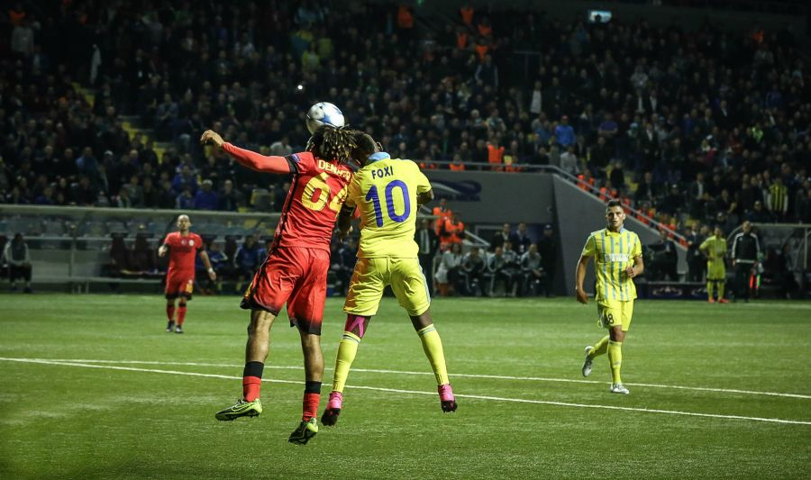
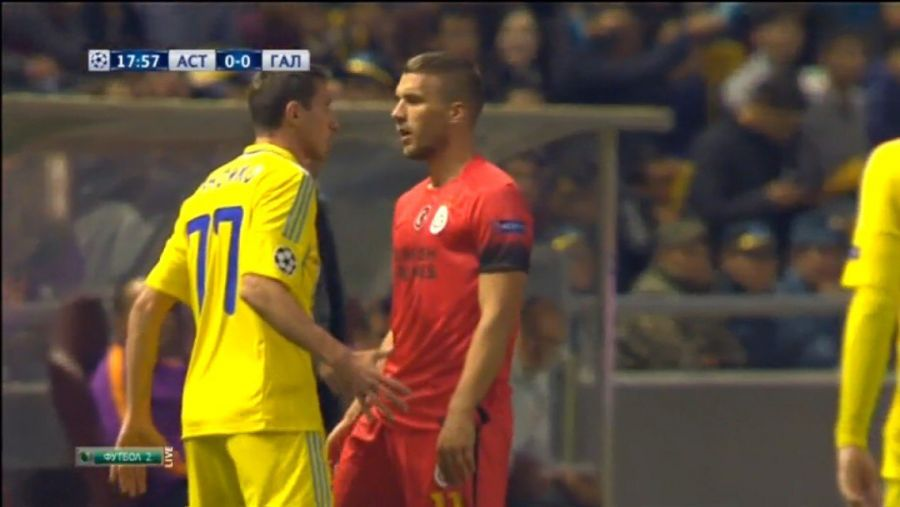
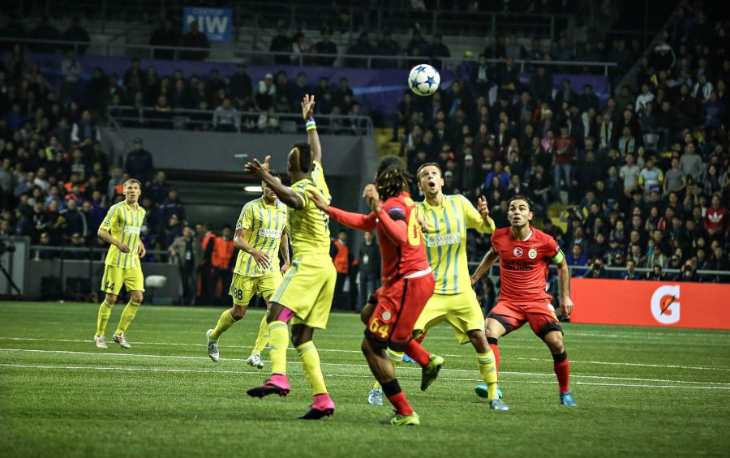

«Астана» Чемпиондар лигасының топтық кезеңіндегі бірінші ұпайына ие болды. Станимир Стойлов шәкірттері «Астана Арена» стадионында «Галатасараймен» 2:2 есебімен тең ойнады.
«Астана-Арена» стадионындағы ойынды «Галатасарай» ойыншылары бастады. Аз минуттан кейін ғана «Астана» ойыншылары кездесудегі қауіпті шабуылдардың бірін ұйымдастырды. Неманья Максимович допты тартып алып, Фокси Кетевоамаға пас асырды. Қонақтардың қорғаушылары сәтті ойнап, бұрыштама добына асырды. 5 минутта Уэсли Снейдердің алыстан бағыттаған соққысын Ненад Эрич асқан шеберлікпен қайтарып, қақпасын голдан құтқарып қалды.

12 минутта елордалық клуб ойыншыларының жүйелі шабуылы қонақтар қақпасына соққы бағыттаумен аяқталды. Георгий Жуковтың бағыттаған соққысы әлсіз шықты. Өз кезегінде Лукас Подольски доп алғанда жергілікті жанкүйерлердің наразылық ысқырығы да «Галатасарай» ойыншыларына қысым жасай түсті. Алайда 31 минутта Біләл Кисаның алыстан бағыттаған соққысын қайтаруға Ненад Эрич дайын болмай шықты. Нәтижесінде «Галатасарай» ойыншылары 0:1 есебімен алға озды.
Бірінші тайм аяқталар тұста қонақтар есепті еселеуге тағы бір рет мүмкіндік алды. Қазақстандық қорғаушылар қателігін Ненад Эрич түзеді.

Екінші таймды қос клуб та ширақ бастады. 55 минутта Бауыржан Жолшиев сылбырлық танытып, таразы басын теңестіруге берілген мүмкіндігін пайдалана алмады. 62 минутта Фокси Кетевоаманың әуелете асырған пасына Бауыржан Жолшиев бірінші болып жеткенмен, допты қақпа торында тулата алмады. Артынша Шомконың тамаша пасын Кетевоама пайдалана алмады. Таразы басын теңестіруге ұмтылған «Астана» ойыншыларының адуыны артты. 76 минутта Георгий Жуковтың шиіре тепкен добын Фернандо Муслера қайтара білді. 77 минутта Джуниор Кабананга допқа соңына дейін таласып, айып алаңына пас асырды. Жойқын соққымен келген допты Балта өз қақпасына енгізіп алды. Нәтижесінде таблодағы есеп теңесті.
81 минутта Джуниор Кабананга жеңіс голын соғуға берілген мүмкіндігін пайдалана алмады. Бір қарағанда гол секілді көрінген доп қақпаны жанай өтті. Есесіне 86 минутта қонақтар қайта алға озды. Бірақ қонақтардың қуанышы көпке созылған жоқ. «Астана» ойыншылары 89 минутта есепті қайта теңестіріп, жанкүйерлерді қуантты. Рохер Каньястың алыстан бағыттаған добы қонақтар қақпасында тулады.

«Астана» екінші таймда тамаша өнер көрсетті. Түріктердің адымын аштырған жоқ. Қысымды арттыра түскен қазақстандық клуб ойыншыларының ойын жүйесі өз нәтижесін берді. Статистика көрсеткіші бойынша да Станимир Стойлов шәкірттерінің шоқтығы биік деуге болады.

.png)